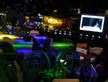
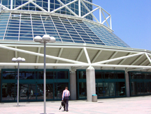

Having recently attended this year's Electronic Entertainment Expo, I am finally feeling sufficient drive to begin writing about my opinions and experiences with videogames, the game industry, and its culture.
I'll start with my impressions of this year's E3.
| The change E3 has undergone in the past few years is interesting, albeit staggering. The last time I attended an E3 was still during its youthful, insane, "experimental" age that all growing conventions go through after puberty. Now that it has settled into relative maturity, many people seem to lament its transformation. I for one, do not.
Previously, the E3 experience could only be categorized as overstimulating. Hoards people blanket the main exhibition hall from morning to night. Since it was open to the public at that time, the crowd is primarily composed of videogamers and fans and their excitement is almost palpable. Every aspect of E3 seemed to be designed with this demographic in mind. The booths are hyper-sensationalistic and each company does everything in their power (and budget) to grab the short attention span of the convention-goers. Many took this to the extreme by abandoning any connection between their booth and their product, favoring instead bright lights, unusual layouts, and the ever-popular "sexual appeal" of booth-babes. Being the solitary person I am, I tend to avoid awkward situations, unnecessary long lines and social "claustrophobia". Therefore I spent the majority of this previous e3 walking the floor, observing the videogames and chaos from a relative distance. (as a side note, the one game i was willing to wait in line to try myself was Shadow of the Colossus which was well worth the wait) |

The previous look and feel of E3's |
| E3 '08, however was of a much different atmosphere. The "booths" were merely large screens attached in an uniform manner to pillars throughout the hall. The only discerning feature between the booths were the logos printed on signs, all forms of embellishment were abandoned. The majority of studios had the same size space to show their games, however the displays ranged from 2 to 8 screens depending on how many games they had available.
This new arrangement lead to a completely different ambiance and presentation style for the show. This year the games themselves are once again the focus of the show rather than the image surrounding the game. The restriction on the public's access to E3 also had a huge impact on how developers approached this show. Because their main goal was to present and discuss their game with attendee's (rather than to grab the attention of as many people as possible), people who had a large role in the development of the game seem to have been much more willing personally represent their product. This resulted in a calm atmosphere where I could approach many booths and have an in depth conversation about the games development, any issues they've had in the creation process, the studio's future intentions and ideas, etc, while demoing the game. This is a unique experience for me, because unlike the developers, businessmen, and media that comprised the majority of the shows' audience, i did not belong there. (unless you count these postings as passable credentials for the term "media") The extent to which i did not belong and the situations that arose from it will be discussed in a future posting. |

The entrance to this years E3 (notice the lack of flashing signs and flags) |
{kind=link}
{kind=link}